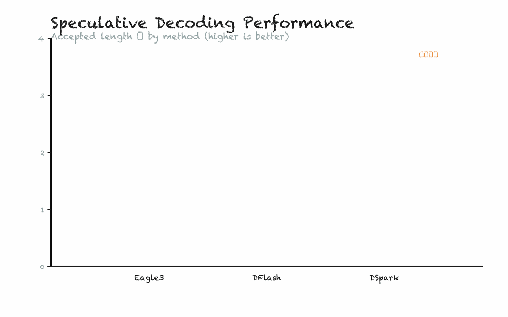

Pure white background, black line art, red accents

Animation: bars growing from bottom with hand-drawn wobble effect
小黑怪诞风格
Pure white background
Black line art
Red/orange/blue accents
极简线条风格
Clean thin lines
Color accents
Strong negative space
过程稿风格
Paper texture
Construction lines
Imperfect hand-drawn feel
python3 scripts/render_hand_drawn_chart.py \
--spec examples/hand-drawn-chart-spec.json \
--outdir ./output \
--basename my-chart \
--style xiaohei \
--frames 30 \
--fps 15